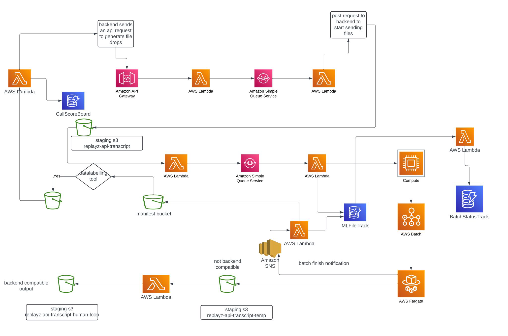

Building a Scalable ML Pipeline That Scores Hundreds of Sales Calls Daily
How we designed and shipped a production ML system on AWS for a sales intelligence client — and how we'd rebuild it today with LLMs on Modal and fine-tuned ColBERT for retrieval that actually understands sales conversations.
The Problem
A sales intelligence platform needed to score sales calls at scale. Their clients' sales teams were making hundreds of calls daily, and each call needed to be transcribed, analyzed for key moments (objection handling, discovery questions, closing techniques), and scored against a methodology framework. Doing this manually was impossible. Doing it with basic keyword matching was inaccurate.
The platform needed an ML pipeline that could:
- Ingest call recordings as they happen, in real-time
- Transcribe and process them reliably at scale
- Score each call against multiple sales methodology dimensions
- Surface results in a dashboard their managers could act on
- Handle hundreds of calls per day without falling over
The Architecture We Built
We designed an event-driven, fully serverless architecture on AWS that decouples every stage of the pipeline. Here's how it works end-to-end:
1. Ingestion Layer
When a sales call is completed, the backend sends an API request to API Gateway, which triggers a Lambda function. This Lambda drops a message into SQS (Simple Queue Service) — our primary decoupling mechanism. Using SQS means we never lose a call even if downstream processing is temporarily overwhelmed. The queue absorbs spikes and feeds processing at a sustainable rate.
2. Transcript Processing
A second Lambda picks messages off the queue and stages raw transcripts in S3. This staging layer is important — it gives us a durable record of every input and makes reprocessing trivial if we update our models.
Another SQS queue feeds the transcripts to the ML compute layer. We deliberately used multiple queues rather than one monolithic queue, because different stages have different throughput characteristics and retry needs.
3. ML Compute
The heavy lifting happens on AWS Batch backed by EC2 compute instances. We chose Batch over Lambda for ML inference because:
- ML models need GPU memory that Lambda can't provide
- Batch lets us right-size instances for the model footprint
- We can process multiple calls per instance, amortizing cold start
Custom tracking components monitor the state of every file through the pipeline. This was essential for reliability: we always know exactly where every call is in the process, and we can detect and retry failures automatically.
4. Output Routing
After scoring, the pipeline splits into two paths:
- Backend-compatible outputs go directly to the application database, surfacing in a scoring dashboard that sales managers use daily
- Non-standard outputs (edge cases, low-confidence scores) route through SNS for notification and into a human-in-the-loop staging bucket for manual review
The human-in-the-loop path was critical. No ML model is 100% accurate, and for a product where managers make coaching decisions based on scores, we needed a safety valve. Flagged calls get reviewed, and those corrections feed back into training data — making the model better over time.
5. Container Workloads
AWS Fargate handles longer-running containerized tasks — batch reprocessing, model evaluation runs, and periodic retraining jobs. Fargate gave us the flexibility of containers without managing EC2 instances for these less predictable workloads.
What Worked Well
- SQS as the backbone. The queue-based architecture meant we could scale each component independently. When call volume spiked 3x during quarter-end, the queues absorbed it gracefully.
- Human-in-the-loop from day one. Rather than waiting for the model to be "perfect," we shipped with a review path built in. This let us launch faster and improve continuously.
- S3 staging at every step. Having the raw data, intermediate outputs, and final scores all in S3 meant we could reprocess the entire history whenever we improved the model. Zero data loss.
- File tracking. Custom tracking components gave us end-to-end observability. When something failed — and things always fail — we could pinpoint exactly where and replay from that stage.
How We'd Rebuild It Today: LLMs + Fine-Tuned Retrieval
The architecture above was built in 2023-2024. It works. It's in production. But if we were starting today, two things would change dramatically: the scoring model and the retrieval layer.
Replacing Custom ML Scoring with LLMs on Modal
The original pipeline used custom-trained classification models to score calls against sales methodology dimensions. Training these models required significant labeled data, iteration cycles, and ongoing maintenance. Every time a new scoring dimension was needed, it meant collecting labels and retraining.
Today, we'd use an LLM — specifically Llama 3.1 8B — for the scoring task. Why?
- Zero-shot flexibility. Need to score for a new methodology? Write a prompt. No retraining, no labels, no two-week iteration cycle.
- Nuanced understanding. LLMs understand context, tone, and conversational dynamics that classification models miss. "That's an interesting point" after a price objection means something very different than after a feature question.
- Structured output. With proper prompting, the LLM returns scores, reasoning, and specific quotes from the transcript — all in a structured format the dashboard can consume directly.
We host our LLMs on Modal rather than AWS Bedrock or self-managed GPU instances. Here's the math: a dedicated g5.xlarge on AWS costs ~$730/month whether you're using it or not. Modal charges per second of actual GPU compute. For a pipeline that processes calls in batches (not 24/7 real-time), this means we pay for ~3-4 hours of GPU time per day instead of 24. That's roughly $150-200/month vs $730. Modal also handles scaling to zero, cold starts in seconds, and version deployments with a single command. For batch workloads with variable volume, it's a no-brainer.
The integration is clean. The SQS + Lambda architecture stays the same — instead of calling AWS Batch for ML inference, the Lambda calls a Modal endpoint. The LLM processes the transcript, returns structured scores, and everything downstream is unchanged. Same S3 staging, same dashboard, same human-in-the-loop path.
Replacing OpenAI Embeddings with Fine-Tuned ColBERT
The retrieval layer is where things get interesting. When scoring a call, the model needs to find relevant moments — the exact section where the rep handled an objection, or where they asked a discovery question. In the original system, we used basic text search and heuristics. In a modern RAG setup, most people reach for OpenAI's embedding API.
We use neither. We use fine-tuned ColBERTv2, a late interaction retrieval model. Here's why it matters:
The Problem with Standard Embeddings
Dense embedding models (OpenAI text-embedding-3-small, BGE, MiniLM) compress an entire passage into a single vector. This works well for general semantic search, but it crushes nuance. In sales conversations, the difference between a good discovery question and a mediocre one might be a single word or phrase. A single-vector embedding averages that signal away.
How ColBERT Is Different
ColBERT generates a vector per token, not per passage. When you search, it does a fine-grained token-level matching between the query and every document. Think of it as the model checking "does this specific word in my query match this specific word in the document?" across all combinations, then summing the best matches.
For sales call analysis, this means:
- "What budget have you allocated?" (strong discovery question) vs "Do you have a budget?" (weak yes/no question) — ColBERT distinguishes these. Standard embeddings often don't.
- "I understand your concern about price" (acknowledgment) vs "The price is the price" (dismissal) — the token-level matching catches the semantic difference in handling style.
- When searching for "objection handling," ColBERT finds the actual moments of pushback and response, not just paragraphs that happen to contain the word "objection."
Fine-Tuning Makes It Domain-Specific
Out-of-the-box ColBERTv2 is trained on general web data. Fine-tuning it on sales conversation pairs — "this query should match this transcript segment" — makes it dramatically better at finding the right moments in calls. We create training pairs from the human-reviewed calls (the human-in-the-loop data that was already being collected), so the model improves continuously with zero additional labeling effort.
| Retrieval Method | Approach | Strength | Weakness |
|---|---|---|---|
| BM25 (keyword) | Term frequency matching | Fast, no ML needed | Misses semantic meaning entirely |
| OpenAI Embeddings | Single vector per passage | Good general semantic search | Compresses away token-level nuance, API dependency, per-call cost |
| BGE / MiniLM | Single vector, self-hosted | No API cost, decent quality | Same compression problem as OpenAI |
| Fine-Tuned ColBERTv2 | Multi-vector, token-level matching | Precise retrieval, domain-adapted, self-hosted, no API cost | Higher storage, slightly more compute |
The storage trade-off is real — ColBERT stores 128-dimensional vectors per token instead of one vector per chunk. But for a corpus of sales call transcripts (not billions of web pages), the storage cost is negligible. We're talking gigabytes, not terabytes.
The Modern Stack
If we were rebuilding this pipeline today, the architecture diagram would look simpler, not more complex:
- Ingestion: Same API Gateway + SQS pattern. It's battle-tested, don't fix what works.
- Transcript storage: Same S3 staging. Durability matters.
- Retrieval: Fine-tuned ColBERTv2 indexes the transcript, retrieves the most relevant moments for each scoring dimension.
- Scoring: Llama 3.1 8B on Modal — receives the retrieved moments + scoring rubric, returns structured scores with reasoning.
- Output: Same split — scores go to dashboard, low-confidence to human review.
- Continuous improvement: Human-reviewed corrections fine-tune both the ColBERT retriever and the LLM prompts.
The biggest win? Time to add a new scoring dimension drops from weeks to hours. Write a prompt describing the new dimension, test it against a few calls, deploy. No labeling, no retraining, no waiting.
Lessons for Your Pipeline
Whether you're scoring sales calls, reviewing legal contracts, or analyzing field reports, the principles are the same:
- Decouple with queues. SQS (or any message queue) between every stage. Your pipeline will fail — make sure failures are isolated and retryable.
- Stage everything in durable storage. You will want to reprocess. Make it easy.
- Build human-in-the-loop from day one. It's a quality safety net today and a training data source tomorrow.
- Use the right retrieval for your domain. If precision matters — and in any professional context, it does — fine-tuned ColBERT outperforms general-purpose embeddings. The extra engineering effort pays for itself in result quality.
- Host LLMs where the economics make sense. Dedicated GPU instances for variable workloads is burning money. Pay-per-second platforms like Modal align cost with actual usage.
- Keep your data private. Self-hosted models + self-hosted retrieval means client data never leaves your infrastructure. For regulated industries, this isn't optional.
We build and deploy private AI systems for businesses that need their data to stay private. Whether it's sales intelligence, legal document analysis, or operational analytics — we handle the AI so you can focus on your business. Book a free session to discuss your use case.